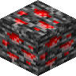

红石资源节点
Redstone Resource Node
英文名: Redstone Resource Node命名空间 ID:
oritech:resource_node_redstone类型: 方块所属模组: Oritech资料检索: 🔎 在 MC百科 搜索「红石资源节点」用于合成 (1)
oritech:deep_drillOritech

原始 JSON
{
"type": "oritech:deep_drill",
"ingredients": [
{
"item": "oritech:resource_node_redstone"
}
],
"results": [
{
"count": 1,
"id": "minecraft:redstone"
}
],
"time": 1
}